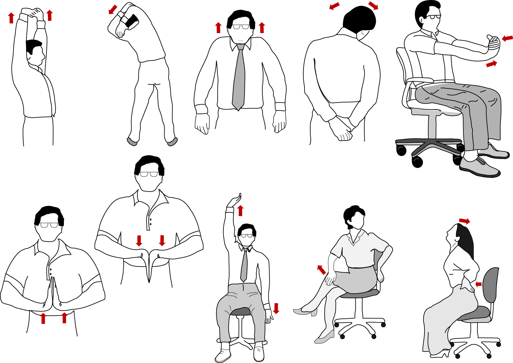

O que fazer nas pausas do trabalho?

O ideal é aproveitar as pausas no trabalho para fazer atividades leves, como tomar uma água, ir ao banheiro e até mesmo esticar o corpo. Também vale escutar um episódio de um novo podcast ou ouvir alguma música alegre e que te ajude na motivação.
Também dá para responder alguma mensagem importante ou fazer uma ligação para resolver alguma coisa, como marcar uma consulta médica. Outra opção é aproveitar o tempo para tomar um café na copa da sua empresa, bater um papo rápido com os colegas de trabalho e assim estreitar laços de amizade.
Você pode colocar um temporizador para não perder a hora e manter o seu cronograma de trabalho em ordem.
O que não fazer nas pausas no trabalho?
Evite navegar na internet, responder a e-mails e usar as redes sociais nas pausas no trabalho. A mente precisa descansar e como os meios de comunicação eletrônicos oferecem muito estímulo, é melhor fugir deles.
Lembrete importante: não espere se sentir esgotado para fazer uma pausa. Para cumprir todo o seu cronograma de trabalho, a mente precisa estar bem descansada.
obs.
Atividades com muita distração, como jogos, não são tão interessantes porque podem atrasar a sua volta ao trabalho